Convocatoria
CoCrea Un Compromiso por Colombia
Lineamientos generales del proyecto
Lineamientos generales del proyecto
Perfil
Músicos solistas, cantautores o agrupaciones colombianas de géneros como pop, reggae, rock, rock alternativo, música de autor, boleros, pop alternativo, cumbia, cumbia llanera, música del pacífico, música urbana y sus nuevas expresiones, rap, salsa, son, R&B, soul, funk, dancehall, reggaetón, entre otros. Podrán postularse agrupaciones sin importar la cantidad de músicos que la conformen.